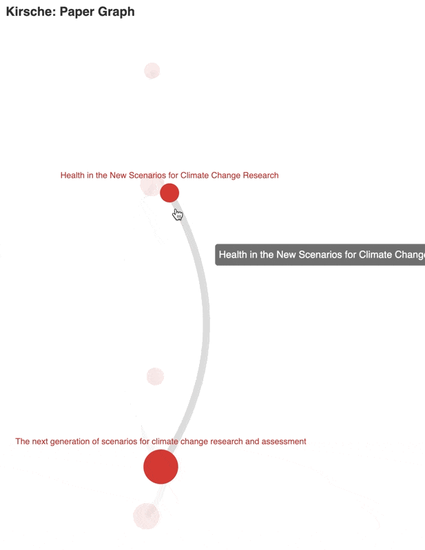
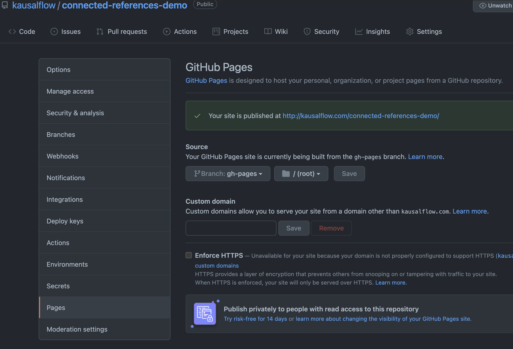

Use in GitHub Actions¤
GitHub Actions is a great tool to automate your workflows.
Paperpile
Paperpile can automatically backup bib files in git repositories. Using GitHub Actions, we can perform some magic on our paperpile backups.
Setup Actions to Visualize bib Files¤
Demo Repository
We have setup a demo repository here: kausalflow/connected-references-demo.
The following is a demo.
The following files will be created
data
├── connections-climate_change
│ ├── 12868807.json
│ ├── 128770297.json
│ ├── 14298480.json
│ ├── 154857890.json
│ ├── 1614769.json
│ └── 27573.json
└── visualizations
└── climate_change.html
And a new branch (gh-pages) will be created using the content inside data/visualizations. Set up your github pages using this branch to see the website.

Suppose your bib file is located at references/climate_change.bib in your repo.
Create a file in your repo: .github/workflows/visualize_climate_change.yaml and fill it with the following.
name: Visualize Climate Change Papers
on:
push:
branches:
- main
schedule:
- cron: '5 7/5 * * *'
workflow_dispatch:
inputs:
name:
description: 'Hit it now'
required: false
default: 'I Just wanna do it'
jobs:
deploy:
runs-on: ubuntu-latest
steps:
- name: Checkout current repo
uses: actions/checkout@v2
- name: Get current directory and files
run: |
pwd
ls
- uses: actions/setup-python@v2
with:
python-version: '3.7' # Version range or exact version of a Python version to use, using SemVer's version range syntax
architecture: 'x64' # optional x64 or x86. Defaults to x64 if not specified
- name: Install Python Requirements
run: |
python --version
pip install kirsche
- name: Download Records
run: |
kirsche connections -sb references/climate_change.bib -c data/connections-climate_change/
kirsche visualization -sc data/connections-climate_change/ -th data/visualizations/climate_change.html
git config --local user.email "action@github.com"
git config --local user.name "GitHub Action"
git pull
git status
git add .
git commit -m "Update Meta and Visualize" || echo "Nothing to update"
git pull
git status
- name: Push changes
uses: ad-m/github-push-action@v0.6.0
with:
branch: main
github_token: ${{ secrets.GITHUB_TOKEN }}
- name: Deploy Visualizations
uses: peaceiris/actions-gh-pages@v3
with:
github_token: ${{ secrets.GITHUB_TOKEN }}
publish_dir: ./data/visualizations/
publish_branch: gh-pages
Setup GitHub Pages

Using this GitHub Actions, the visualization will be updated whenever new references are added to the bib file.
Limitations
Since SemanticScholar API only allows 100 records per 5 min, it is not practical to visualize millions of papers. But don't worry about the limitations, we have implemented some mechanism to stop the query at the right moment. Since all meta files are saved, the scheduled runs will download records that are left from the previous runs.
Just in case, here is the setting for the schedules:
schedule:
- cron: '5 7/5 * * *'